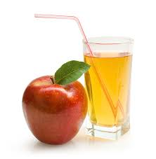

Apple Juice

Description
This apple juice is super easy to make at home and requires no juicer! This is my mother's recipe
— she had this creative way of using the leftover apple cores and peels (from baking pies) to
make homemade apple juice. The juice is light and pleasantly sweet.
Ingredients
- 5 cups water
- 3 peels and cores from red apples - seeds removed
- cup white sugar ¼
- Gather all ingredients.
- Combine water with apple peels and cores in a saucepan. Bring to a boil,
then reduce the heat and simmer, stirring occasionally, until the apple
flavor and color have permeated the water, about 30 minutes.
- Strain apple juice into a mixing bowl; discard all solids.
Stir in sugar until dissolved. Allow to cool for 30 minutes before drinking.